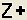
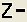
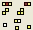

VOLVE 5.0
VOLVE 5.0
Zooming and Panning
Zooming is easy to do. Just rotate your mouse wheel in and out to zoom the universe in and out (kind of like google earth).
To Zoom In:
Clicking on the  button will zoom into the universe. You can also use the mouse wheel to zoom in and out.
There is also a menu item "Zoom In" if that's your thing.
To Zoom Out:
Rotate the mouse wheel down to zoom out. Or press the  button. There is also a menu command: "View > Zoom Out".
To see everything:
To view the entire universe press on the tool bar button  (or select View All from the menu).
To Pan:
Click and hold the left mouse button to pan. As you drag the mouse the universe moves accordingly. You can also use the arrow keys to pan. This also works when you are simulating the universe.